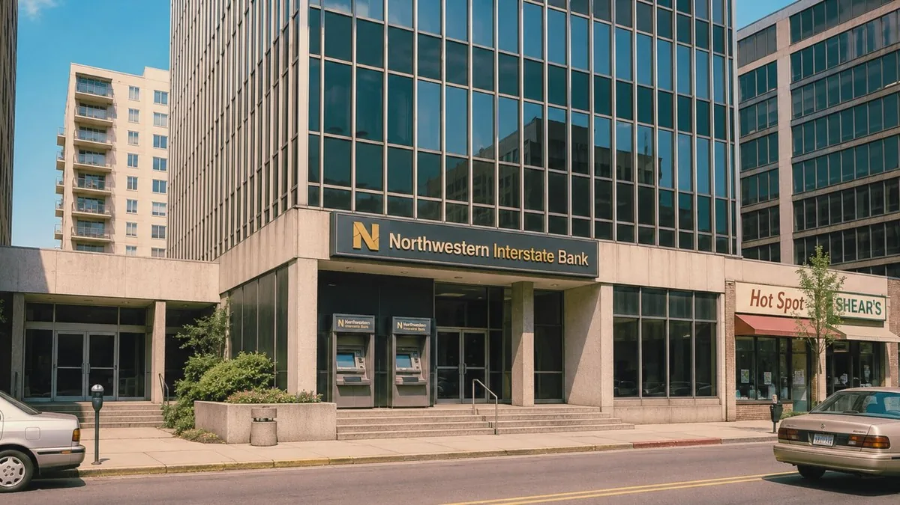

CityNet :> Home :> Local Links
[#]Local Links
A curated list of links inside and outside CityNet. Some links connect to other Lost Hills servers, others to external WWW sites maintained by civic partners. Links marked [backup] have been restored from B12 and may not lead where they used to.
Lost Hills Web Ring
LOST HILLSWEB RING
CITYNET 1993PUBLIC ACCESS
NETSCAPENOW!
MADE WITHMEGABYTE
K L H L1240 AM
CATFISH LAKERECREATION
MOFAGALLERY 4
SHADEWATERCIVIC PARTNER
SEZZLERHOSPITALITY
LOST HILLSNEWSPAPER
City of Lost Hills
| Link | Description | Status |
|---|---|---|
| Lost Hills Online | This site — municipal archive home | live |
| City Clerk's Office | Records, public notices, removed-article requests | live |
| News Archive | Lost Hills newspaper digital archive | partial |
| Public Works (cwp.lh) | Roads, water, dispatch, Continuity Grid | moved |
| Lost Hills Fire & EMS | Stations, alerts, ride-along program | live |
| Lost Hills Public Library | Hours, catalog, CityNet terminal | live |
| Lost Hills Regional Medical Center | Children's Care Wing & civic health | partial |
| Lost Hills Schools | District calendar & CityNet-in-the-classroom | live |
Civic Partners & Business
| Link | Description | Status |
|---|---|---|
| Shadewater Laboratories | Civic technology & applied systems | partial |
| Sezzler Hotel & Resort | Lost Hills Conference Resort | live |
| Northwestern Interstate Bank | Civic finance & ATM modernization | live |
| Megabyte Computers | Public access terminals; modems | live |
| The Lost Hills newspaper | Paper of record — print suspended 199? | partial |
| KLHL 1240 AM | Civic bulletins, evening jazz | live |
| Museum of Fine Art (MOFA) | Exhibitions & civic arts | live |
| Catfish Lake Recreation | Permits, hours, monitoring array | partial |
| Benthic Gas & Food Mart | Lake permits, payphones, 24 hr | live |
Restored from Backup
| Link | Description | Status |
|---|---|---|
| shadewater_staff_directory_1993.html | Removed 05/20/1993. Re-restored. | [backup] |
| sezzler_floor_plan_tower2_lvls.gif | Tower 2 floor plan, levels 1–7. References B12. | [backup] |
| north_lost_hills_plaza_map_1993.gif | Plaza map — differs from current signage. | [backup] |
| horizon_mapping_demo_room_b12.jpg | SASC demo room photograph — corrupted. | [backup] |
| citynet_backup_index.dat | Backup index file — not human-readable. | [backup] |
| clerk_removed_articles.html | Articles removed at request of Clerk. Removal request ignored by backup process. | [backup] |

// nwib_east_plaza_1992.jpg · Northwestern Interstate Bank, East Plaza branch · ATM modernization program, CityNet partner · branch permanently closed; date of closure not in archive
Outside Lost Hills
- State of Washington Civic Network — link not resolving
- Department of Ecology — lake & watershed reports
- Pacific Coast Telephone — outage status
- Drumlin, BC (sister city) — link broken (date unknown)
- Yahoo! Cities — Lost Hills, WA — listing pending [Yahoo! reports Lost Hills as unverified]
Tiny Buttons
LOST HILLSEST 1889
CATFISH LAKE312 FT
CITYNET03:17 PDT
THE FUTUREWORKS HERE
SASC 1993PRESS
PAVILION B12MAINT. ONLY
CLERK'S OFFICEREMOVED 0
B A C K U PVOLUME B12
UNDER CONSTRUCTION If you maintain a Lost Hills site and would like to be added to the ring, submit your URL through the Clerk's Office. Submissions are reviewed weekly. No external submissions have been processed since 199?.